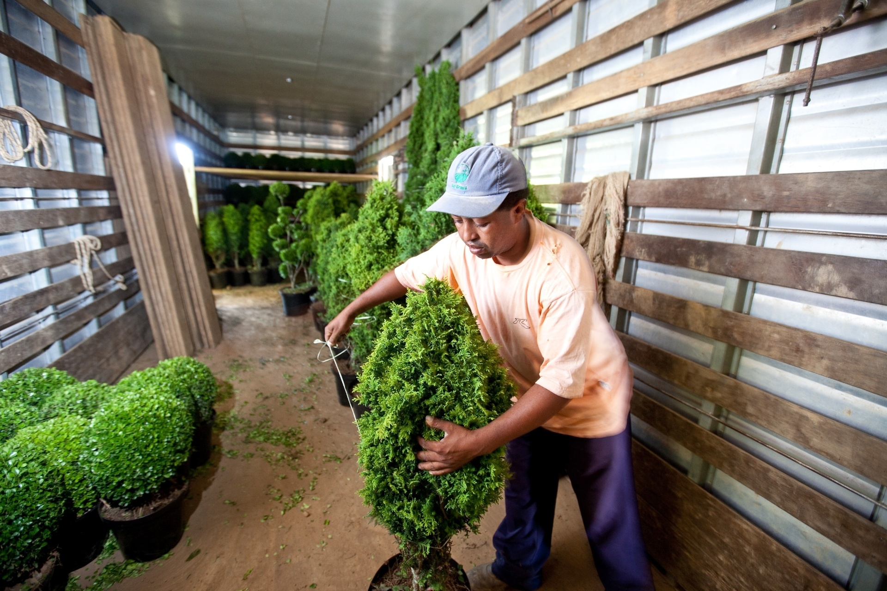
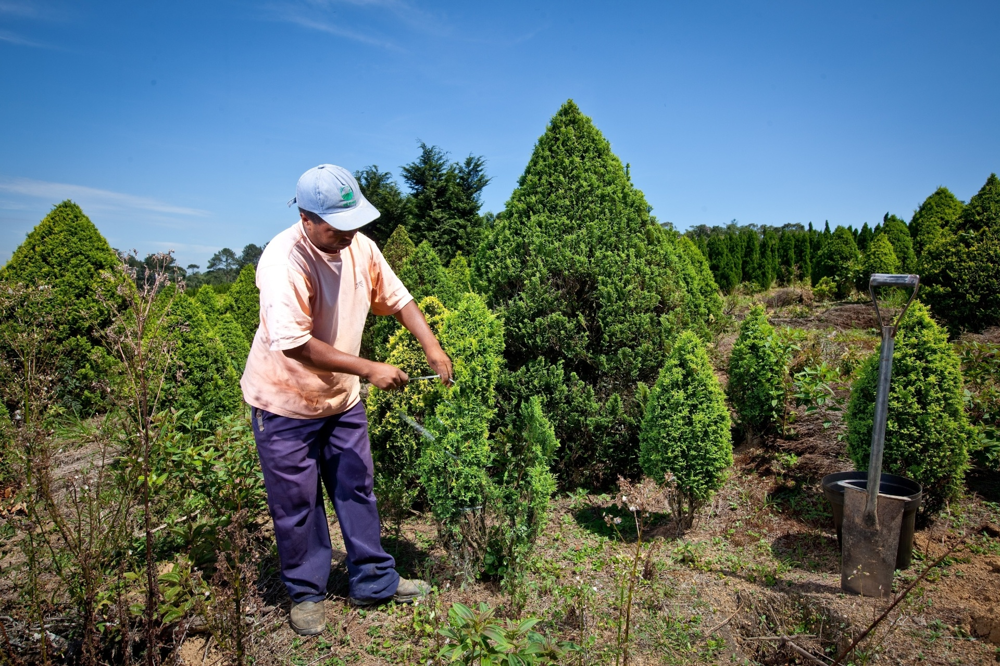
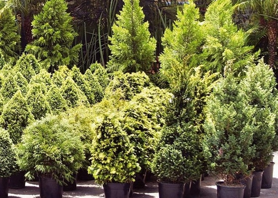
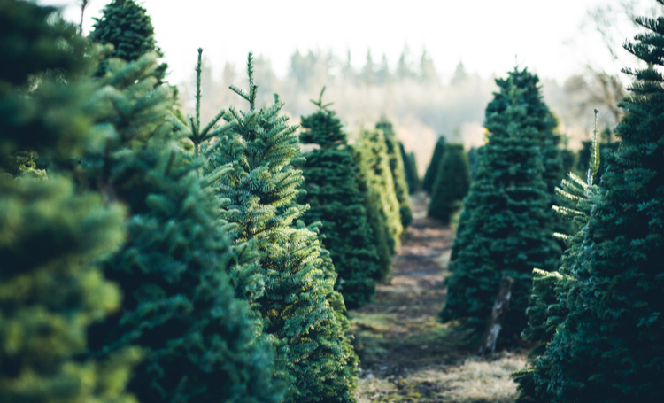

Na Estrela Verde, o Natal brilha mais forte com a magia dos nossos pinheiros
Na Estrela Verde, trazemos para você a verdadeira essência do Natal com nossos pinheiros especiais, selecionados com carinho para transformar sua casa em um lar acolhedor e repleto de alegria. Cada árvore é cuidadosamente escolhida para garantir beleza, frescor e um toque encantador à sua celebração. Seja para o Natal ou outras festas, nossos pinheiros são o brilho que faltava para sua decoração. Faça da Estrela Verde o ponto de partida para momentos inesquecíveis em cada celebração!



